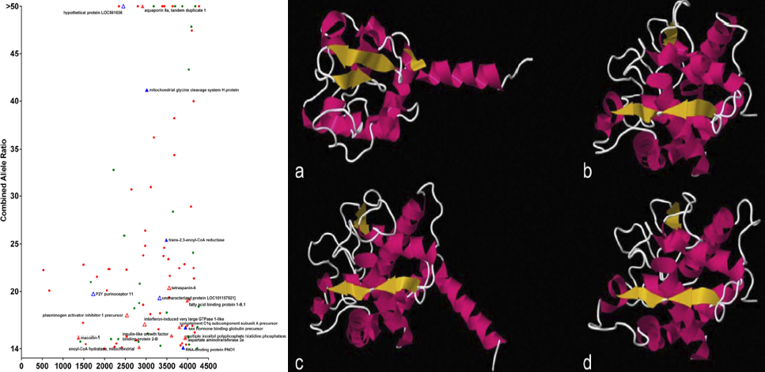
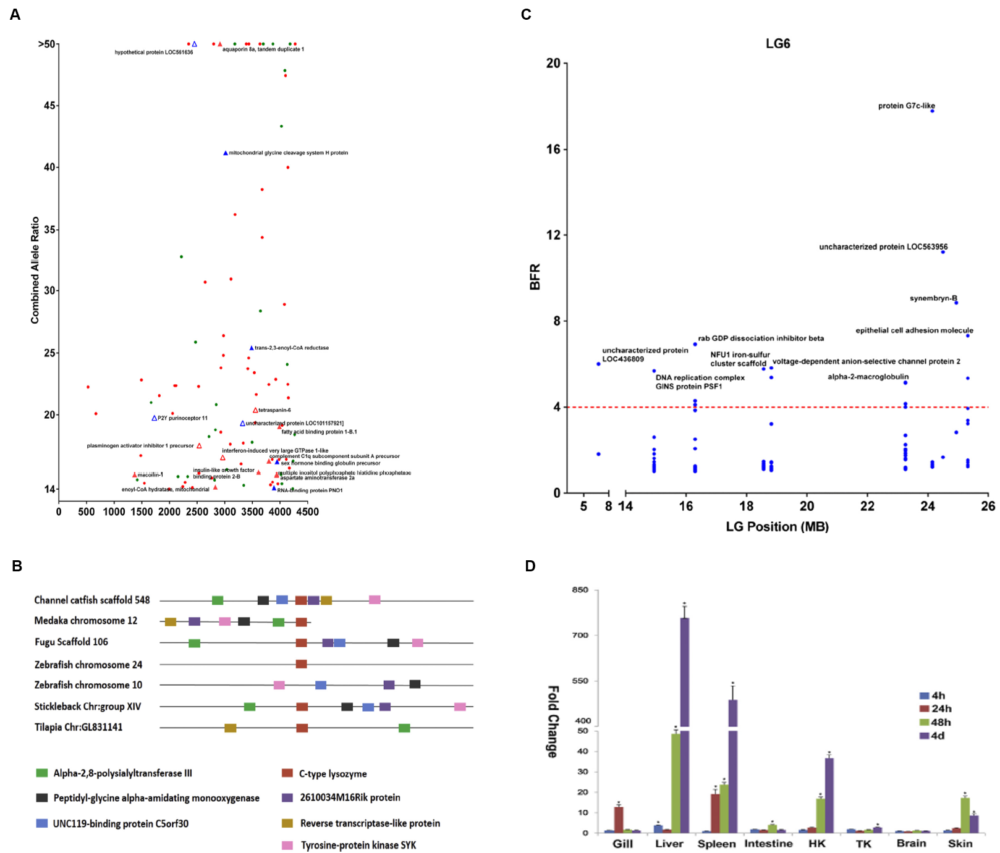

Project Overview
 I optimized Bulk segregant RNA-sequencing (BSR-seq) technology and applied it to study enteric septicemia of catfish, one of the most common and serious diseases afflicting catfish. This study demonstrated the utility and effectiveness of this novel technique and identified the candidate genomic region relevant to this disease. We also performed a series of genomic and bioinformatics analyses of the data obtained using BSR-seq, making a range of crucial discoveries concerning catfish innate immunity and resistance against bacterial infections.
Representative publication
- Ruijia Wang, Luyang Sun, Lisui Bao, Jiaren Zhang, Yanliang Jiang, Jun Yao, Lin Song, Jianbin Feng, Shikai Liu, Zhanjiang Liu: Bulk segregant RNA-seq reveals expression and positional candidate genes and allele-specific expression for disease resistance against enteric septicemia of catfish. BMC Genomics (2013); 14(1):929. Paper link
- Ruijia Wang, Yu Zhang, Shikai Liu, Chao Li, Luyang Sun, Lisui Bao, Jianbin Feng, Zhanjiang Liu: Analysis of 52 Rab GTPases from channel catfish and their involvement in immune responses after bacterial infections. Developmental and comparative immunology 45.1 (2014): 21-34. Paper link
- Ruijia Wang, Jianbin Feng, Chao Li, Shikai Liu, Yu Zhang, Zhanjiang Liu: Four lysozymes (one c-type and three g-type) in catfish are drastically but differentially induced after bacterial infection. Fish & Shellfish Immunology (2013); 35(1). Paper link
Gallery

Figure. Genomic resource of Sea Cucumber.
(A) Genes harbouring significant SNPs, plotted by their combined allele ratios versus the rank of RPKM. Red dots stand for genes
with the preferentially expressed allele expressed higher in resistant group and their parental origin unknown; Solid red triangles stand for genes
with the preferentially expressed allele expressed higher in resistant group and their parental origin being channel catfish; Unfilled red triangles
stand for genes with the preferentially expressed allele expressed higher in susceptible group and their parental origin being channel catfish;
Solid blue triangles stand for genes with the preferentially expressed allele expressed higher in resistant group and their parental origin being
blue catfish; Unfilled blue triangles stand for genes with the preferentially expressed allele expressed higher in susceptible group and their
parental origin being blue catfish; and green dots stand for genes with the preferentially expressed allele expressed higher in susceptible group
and their parental origin unknown.
(B) Schematic representation of the results from syntenic analysis of c-type lysozyme genes from various fish with species names and their chromosomes or scaffolds indicated
on the left margin. Gene names are color-coded and are self-explanatory.
(C) Distribution of genes containing SNPs of high BFR in linkage group 15.
(D) Quantitative real-time RT-PCR analysis for the expression of the catfish c-type lysozyme.
Author: Ruijia Wang